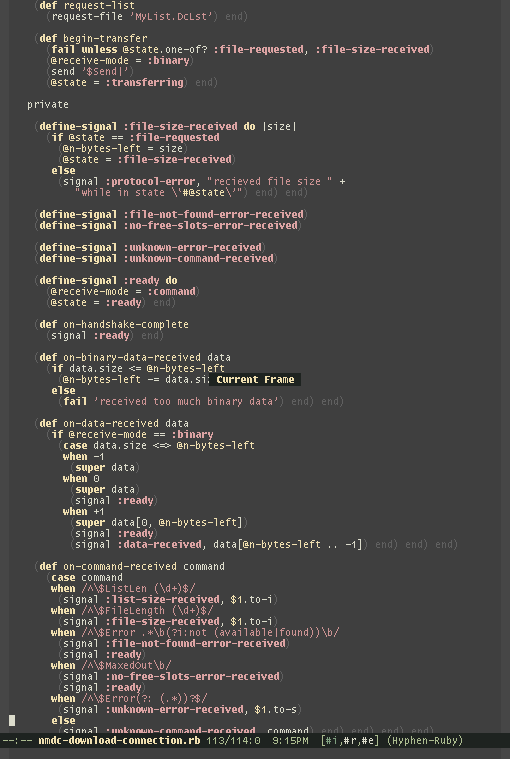

Ruby-Lisp Hybrid Pix #
Wild, here’s another shot of that envisioning of Ruby in the parenthetical, posted by Slyphon earlier today. Definitely nods closer to Ruby than Lisp. Dashes in method names is lovely.

The other shot is here. This Doctor Lion also has a shot of darkened end in his highlighting, if the staircase gives you vertigo.
{kind=link}
{kind=link}
I guess it’s not really near Lisp at all, though, with code like: (without-punctuation.to_s + '='). It’s no worse than Perl, though. Come to think of it, the only thing that draws me to Perl is its wrongness.
slyphon
I didn’t want to be accused of plagiarism, so I looked through my irc logs and found that it was “dbrock” on #ruby-lang that posted this picture, so all credit goes to him :)
I’m happy that other people are intrigued by this, I think it’s just great.
Ben
is it emacs ? which color-theme do you use ?
andre
who’ll make a vim color theme like that for me? :P
dbrock
Wow, I’m excited to see this mentioned here. Thanks for spreading the word, slyphon and _why.
Ben, it sure is Emacs. You can grab the color theme here.
andre, it’s your lucky day. There’s a vim color theme available at the same location.
About the hyphens, I think I should point out that my code actually does look like that. I’m using a simple preprocessor to change it into valid Ruby code on the fly. If you think this sounds cool, you can download it here.
I haven’t bothered to make it insert ends automatically, because the Ruby mode for Emacs gets confused by the lack of ends in code like this:
So it doesn’t help you in having your code look as Lispy as it does in long-live-the-parens.png. But note that this is already perfectly valid Ruby:
andre
dbrock: Yay thank you :D
What’s the name of the font you’re using?
dbrock
It’s based on Lucida Typewriter, but hacked to make everything look nice: tall brackets, symmetrical apostrophe and grave accent, Unicode quotes and dashes, and random other tweaks—I call it Lucy.
But don’t tell anyone, since I guess technically you’re not permitted to make derived works of Lucida Typewriter. Someday I’ll do a clean-room remake. Oh, did I mention it has box-drawing characters so you can play nethack?
why
Dangerful hacks, dbrock. I’d actually like to see the hyphen hack make it into Ruby. Plus signs I think would be useful as well.
I started using the plus sign as a class method in Hobix, but its precedence keeps it from gobbling up multiple args.
For a few hours, custom types in Hobix looked like this:
I wish the other operators were available as class methods. Slathered in sucrose!
dbrock
How did you ever get that to work? Did you redefine Symbol#+@?
why
Just
def Sketch.+.dbrock
First of all, something weird is going on with this comment box. Below are two identically typed lines.
In the preview, only the first plus sign appears.
Anyway, I don’t get the
Sketch.+thing. This just gives me:foo.Okay, since all my plus signs seem bent on mysteriously disappearing, I’ll give up trying to write something coherent about this subject now.
dbrock
Actually, uh, nevermind. Forget everything I said about mysterious disappearences. It turned out fine after all.
why
No, you’re right. The preview has a grudge against plusses. (Some.)
Yeah, now that I look at it, there’s no way it worked, but I swear it did! Hehe. Anyway, I’m using self._ now.
William
That’s kinda cool, but… sexps==pain. I don’t want to have to count parentheses like it’s 1970 all over again.
If anything, I’d be in favor if a Python-style indentation mode where everything is the same but you can drop the staircase of ends.
(But the font is very cool, as is the hyphen in identifiers.)
dbrock
Okay, thanks, that’s actually quite relieving—my brain seems to be basically operational then.
Using an underscore for a method name is interesting, but isn’t that kind of reserved for gettext?
:-)I’d like to have some additional special characters that we can put in method names. The ”?” and ”!” characters are good, but they can only do so much. For example, I like how ”%” is used to mean “internal” in various Lisps. But of course, that wouldn’t work in Ruby. And I like how ”*” is used to mean “prime”—but ”!” fills that role quite okay in Ruby. I don’t know what I’m getting at. Just thinking out loud, I guess.
By the way, what’s up with the
self::fooin your code? That’s pretty ideosyncratic, I think! Why not justfooor at leastself.foo?zenspider
Lookie what we just made work on Polishing Ruby :
maldoror
so, from Lisp’s 9 ideas… what would be remaining for Ruby not to be a Lisp subset after implementing this ?
almost nothing, right ?
the uninitiated see also: http://www.paulgraham.com/icad.html
Comments are closed for this entry.